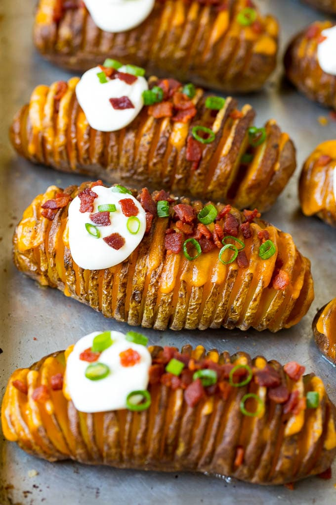

Potatoes with slits in them
Time: 1 hour 15 minutes
Servings: 6
Ingredients
- 6 Russet potatoes
- 1/4 cup olive oil
- 1/4 cup melted butter
- Salt and pepper
- 8 thin slices cheddar cheese
- 4 slices bacon
- 1/3 cup sour cream
- 2 tablespoons green onions
- Cooking spray
Instructions
- Preheat the oven to 450 degrees F. Line a sheet pan with foil, then coat the foil with cooking spray.
- Place a potato on a cutting board between two chopsticks. Slice the potato into 1/4 inch thick slices,
the chopsticks will prevent you from cutting all the way through.
- Repeat the process with the remaining potatoes. Place the potatoes on the sheet pan.
- In a small bowl, whisk together the olive oil, butter, salt and pepper.
- Brush the olive oil mixture all over the potatoes, making sure to get some in between the slices.
- Bake for 50-60 minutes until potatoes are tender and browned.
- Remove the potatoes from the oven; let them cool for 5 minutes.
- Insert the cheddar cheese slices in between each cut of the potatoes.
- Return the potatoes to the oven and bake for an additional 3-5 minutes or until cheese is melted.
- Top each potato with a dollop of sour cream, then sprinkle the bacon and green onions over the top. Serve immediately.
Go back to top